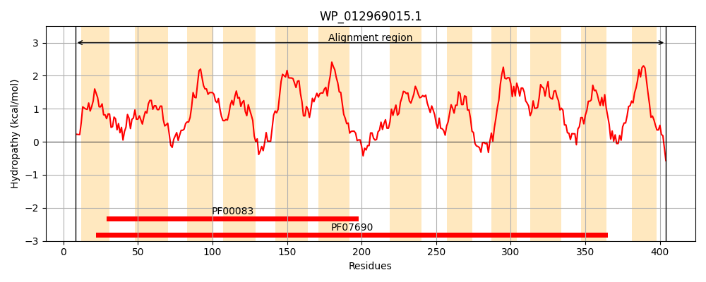
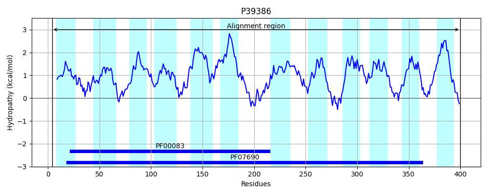
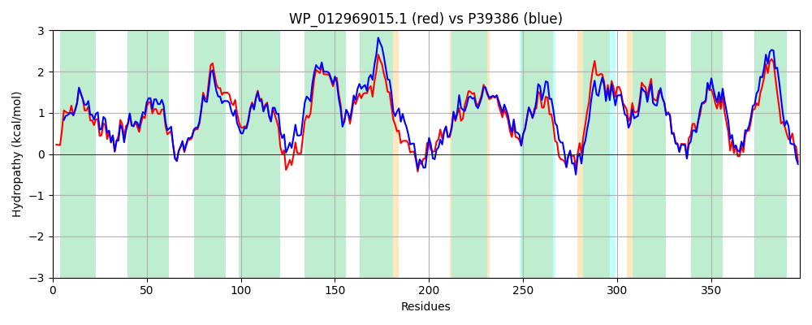

Hit Accession: P39386
Hit TCID: 2.A.1.2.52
Hit Description: gnl|BL_ORD_ID|10265 gnl|TC-DB|P39386|2.A.1.2.52 Multidrug resistance protein MdtM OS=Escherichia coli (strain K12) GN=mdtM PE=1 SV=1
Mach Len: 397
e:0.000000
Query TMS Count : 12
Hit TMS Count: 12
TMS-Overlap Score: 11.700000
Predicted Substrates:CHEBI:3098;bile acid, CHEBI:8641;puromycin
BLAST Alignment:
Score: 1627 , Bit scores: 631 bits, E-value: 0.0e+00, Alignment length: 397, Percentage identity: 78
Query: 8 WLTRHAAALFFPAALILYDFSAYLTTDLIQPGILHVVRDFNADVALAPASVSLYMAGGMALQWLLGPLSDRIGRRPVLLTGALIFTLACLATLFTTSMTQFLIARFVQGTSICFIATVGYVTVQEAFEEKRSIRLMAVITSVVLVAPIVGPLSGAALMHFIHWKALFGIIAAMGLVAWLGLLLTMPETVRRGDVPFSLPGVLRDFRAVFRNRIFLLGAATLSLSYIPLMSWVAVSPVILMDAGGLTTSEFAWSQVPVFSAVIIANLSVARWVKDPTRPRFVLSAVPIQMLGLAILIVGNLIWPHVWLWSVLGTCFYAFGIGLIFPTLFRFTLFSNDLPKGTVSASLNIVILSVSALSIEGARWLWFHGGRLPFHLLAVAAGIVAACCLAGLLRHQRQ 404
+ TRHAA LFFP ALILYDF+AYL+TDLIQPGI++VVRDFNADV+LAPA+VSLY+AGGMALQWLLGPLSDRIGRRPVL+TGALIFTLAC AT+FTTSMTQFLIAR +QGTSICFIATVGYVTVQEAF + + I+LMA+ITS+VL+API+GPLSGAALMHF+HWK LF IIA MG ++++GLLL MPETV+RG VPFS VLRDFR VF NR+FL GAAT+SLSYIP+MSWVAVSPVIL+DAG LTTS+FAW+QVPVF AVI+AN VAR+VKDPT PRF+ AVPIQ++GL++LIVGNL+ PHVWLWSVLGT YAFGIGLIFPTLFRFTLFSN LPKGTVSASLN+VIL V ++S+E RWLWF+GGRLPFHLLAV AG++ LAGLL RQ
Sbjct: 4 FFTRHAATLFFPMALILYDFAAYLSTDLIQPGIINVVRDFNADVSLAPAAVSLYLAGGMALQWLLGPLSDRIGRRPVLITGALIFTLACAATMFTTSMTQFLIARAIQGTSICFIATVGYVTVQEAFGQTKGIKLMAIITSIVLIAPIIGPLSGAALMHFMHWKVLFAIIAVMGFISFVGLLLAMPETVKRGAVPFSAKSVLRDFRNVFCNRLFLFGAATISLSYIPMMSWVAVSPVILIDAGSLTTSQFAWTQVPVFGAVIVANAIVARFVKDPTEPRFIWRAVPIQLVGLSLLIVGNLLSPHVWLWSVLGTSLYAFGIGLIFPTLFRFTLFSNKLPKGTVSASLNMVILMVMSVSVEIGRWLWFNGGRLPFHLLAVVAGVIVVFTLAGLLNRVRQ 400 | Protein Hydropathy Plots: |
|---|
|  |  |
Pairwise Alignment-Hydropathy Plot:
|
|---|
|  |